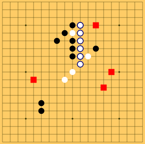

이 웹사이트는 제가 만든 AI와 육목을 할 수 있는 웹사이트입니다.
육목은 오목과 비슷하게 자신의 돌 6개를 한 줄에 이으면 승리하는 게임입니다.
두 플레이어는 번갈아 돌을 놓습니다. 선수가 1개의 돌을 놓고 난 이후에는 번갈아 2개의 돌을 놓습니다.

빨간색 네모는 두 플레이어가 모두 돌을 둘 수 없는 금지구역을 의미합니다. 매 게임마다 4개의 금지구역이 랜덤하게 정해집니다.
서버의 과부하를 막기 위해 10분 이상 착수를 하지 않을 경우 접속이 종료됩니다. 이 경우 더 이상 게임을 이어할 수 없으며 새로고침을 해서 새 게임을 시작해야 합니다.
접속자가 많을 경우 서버에 부하가 걸려 컴퓨터가 착수를 하지 않는 등 게임이 정상적으로 진행되지 않을 수 있습니다. 앙해 부탁드립니다 ^____^
---------------------------TMI-----------------------------
c++로 만든 내부 계산용 프로그램과 process 통신을 하는 python server가 떠있고, javascript가 이 서버와 websocket으로 통신해 게임을 진행합니다. 모든 코드는 여기에서 확인할 수 있습니다.
내부 계산용 프로그램은 옛날 2017, 2018 삼성 육목 경진대회에서 우승했던 저의 프로그램을 수정한 것입니다.
Minimax Algorithm + Heuristic으로 열심히 구현했고 기계학습은 이용하지 않았습니다. 알파고 제로가 핫하던데 먼 훗날에 기계학습을 배운다면 기계학습을 이용해 육목 AI를 만드는 것에 도전해보겠습니다.
websocket, javascript 모두 처음 써보았습니다. 그래서 버그가 굉장히 많을 것 같습니다. 양해 부탁드립니다. 마이너한 버그는 이해해주시고 정말 심각한 버그가 있을 경우 admin@encrypted.gg로 제보해주시면 조치하겠습니다.
Connect6.js는 clucle님의 자바스크립트 오목 코드를 바탕으로 해서 만들었습니다. 감사합니다.
만든 사람 블로그 : BaaaaaaaaaaaaaaaaaaaarkingDog